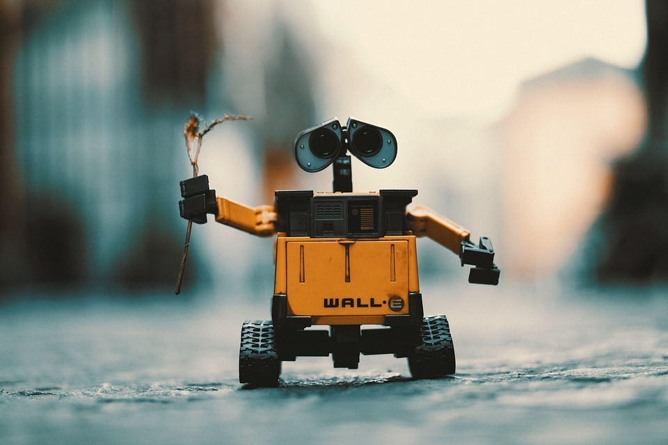
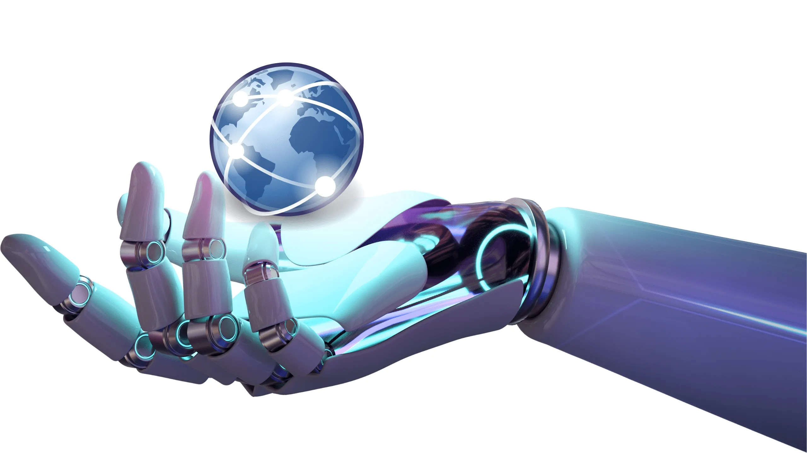
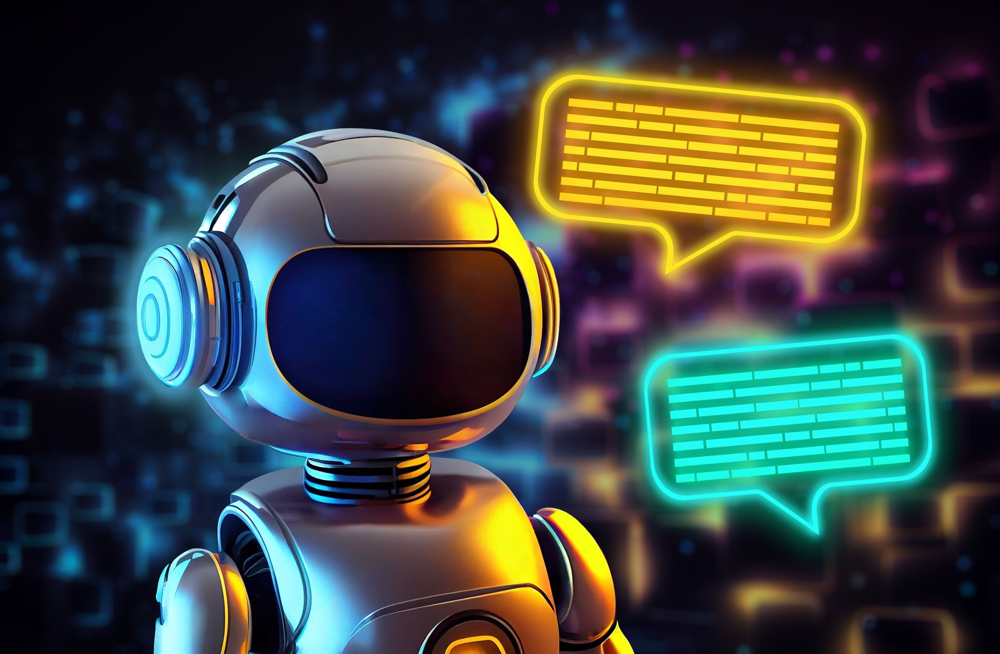

| 1 | 2 | 3 | 4 |
|---|---|---|---|
| Robotica Y Tecnogia By DANNY Y LISANDRO |
|||
| ENLACES: | Robotica
La robótica es una disciplina que se ocupa del diseño, operación, manufacturación, estudio y aplicación de autómatas o robots. Para ello, combina la ingeniería mecánica, ingeniería eléctrica, ingeniería electrónica, ingeniería biomédica y las ciencias de la computación, así como otras disciplinas. La robótica representa la cumbre en la trayectoria de desarrollo tecnológico, es decir, del diseño de herramientas. Su cometido es construir una herramienta que pueda desempeñar muchas de las labores que actualmente desempeña el ser humano, de manera más eficiente y rápida, o en condiciones y ambientes que al ser humano le serían inaccesibles. El robot es, de algún modo, la herramienta más inteligente posible. Sin embargo, el desarrollo de este tipo de herramientas, ya desde los años de los inicios de la automatización, también se traduce en desempleo y en la sustitución de mano de obra humana por autómatas. |
Carateristicas de la Robotica
La robótica es la ciencia que estudia a los robots, y como tal, concentra las distintas disciplinas necesarias para diseñar y fabricarlos. Así, reúne conocimientos de distintas ramas de la ingeniería, de la electrónica, de la física, la informática, la mecánica, la animatrónica y otras áreas del saber semejantes. Su cometido, claramente, es desarrollar los diferentes aspectos de un robot funcional: su autonomía e inteligencia propia, su resistencia y capacidad de operatividad, su programación y mecanismos de control. Además, se trata de una disciplina relativamente joven, cuyas aplicaciones en la vida real tienen un enorme impacto. Al mismo tiempo es fuente de desconfianza y de temores de parte de la sociedad. |
|
|  | |||
|  | 🤖🇨🇴 La robótica en Colombia ha experimentado un crecimiento significativo en los últimos años. El país ha logrado avances significativos en la adopción y desarrollo de tecnologías robóticas en diversos sectores. 🤖🇨🇴 | ||
| En el ámbito educativo, se han implementado programas y cursos especializados en robótica en diferentes instituciones, desde escuelas hasta universidades, con el objetivo de fomentar el interés y formar a estudiantes en esta área. Esto ha permitido el surgimiento de jóvenes talentosos y emprendedores en el campo de la robótica. En cuanto a la investigación y desarrollo, se han creado centros y laboratorios especializados en robótica, donde se llevan a cabo proyectos innovadores. Estos esfuerzos se han concentrado en aplicaciones robóticas para sectores como la salud, la industria, la agricultura y la seguridad. |
|||
| La robótica también ha tenido un impacto importante en la industria. Empresas colombianas han implementado sistemas robóticos en sus procesos de fabricación y logística para mejorar la eficiencia y la productividad. Además, se ha promovido la colaboración entre el sector privado, el gobierno y las instituciones académicas para impulsar la investigación y la adopción de la robótica en la industria nacional. Aunque aún existen desafíos, como la falta de inversión y la necesidad de una mayor difusión y conciencia pública, la robótica en Colombia muestra un panorama prometedor. El país ha demostrado un creciente interés y compromiso en esta área, lo que ha llevado a avances significativos en la adopción y desarrollo de tecnologías robóticas. Con el tiempo, se espera que la robótica en Colombia siga expandiéndose y contribuyendo al crecimiento económico y social del país. |
|||
| La palabra robot proviene del vocablo checo robota, que significa literalmente “esclavo”. Fue puesto en circulación por el escritor checo Karel Capek (1890-1938) con su novela R.U.R. (Robots Universales Rossum) de 1920. Igualmente, la palabra robótica, entendida como disciplina, fue acuñada por Isaac Asimov (1920-1992). Este escritor de Ciencia Ficción fue uno de los más célebres cultores del futuro imaginario robotizado. | Sin embargo, los antecedentes de la robótica pueden rastrearse mucho antes, en el deseo del ser humano de construir seres a su imagen y semejanza, que pudieran relevarlo de los trabajos tediosos. Ya en el siglo III a. C. el escritor chino Lie Yukou escribió el Lie Zi, relato donde a un rey chino le era presentada una figura humana mecánica. En los textos Pneumática y Automata de Herón de Alejandría, en el siglo I a. C., ya aparecían las ideas de máquinas y autómatas capaces de hacer lo que el ser humano no. |  | |
| Los primeros robots reales aparecieron entre 1950 y 1960. Se dedicaban a labores industriales simples, mecánicas y automatizadas. En 1971 se utilizó el primer robot dedicado a la exploración espacial. Fue puesto en la superficie marciana por el proyecto espacial de la extinta Unión Soviética, Se perdió contacto con él tan sólo unos segundos después del aterrizaje. Los estadounidenses imitaron este gesto en 1976 con el Viking I de NASA, demostrando así el enorme potencial de los robots en la exploración espacial y en otros ambientes extremos, como el fondo marino. | Incluso se intentó emplear robots en la remoción de los escombros del reactor destruido en Chernóbil, en 1986, pero la radiación freía los circuitos a los pocos segundos de uso. El primer robot humanoide y bípedo, el ASIMO, fue anunciado en Japón en 2011, y se hicieron demostraciones de su capacidad de interacción con humanos. Los adelantos en inteligencia artificial permitieron que en 2015 apareciera también Sophia, un robot ginoide con apariencia humana realista, diseñado para adaptarse al entorno social con humanos y ser capaz de recordar, reconocer caras y simular expresiones faciales. | "En el encuentro entre robots y humanos, encontramos la maravilla de la tecnología y la esencia de la humanidad, recordándonos que somos seres capaces de crear, pero también de sentir y dar sentido a nuestra existencia."ENLACE |
|
| Primera generación. Robots multifuncionales con un sistema simple de control, manual, de secuencia fija o secuencia variable. | |||
| Segunda generación. Robots de aprendizaje, que repiten secuencias de movimientos previamente ejecutadas por operadores humanos. | Tercera generación. Robots de control sensorizado, controlados por algún tipo de programa (software) que envía las señales al cuerpo robotizado para llevar a cabo determinadas tareas mecánicas. | ||